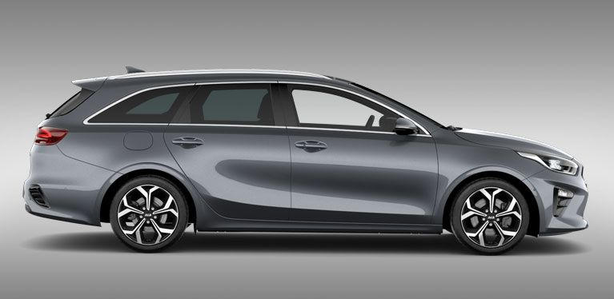

Для осуществления съезда на базу арендуются легковые машины AVIS
Все водители получают информацию о том, кто едет, а также номера телефонов коллег, с которыми едут.
Нельзя самовольно менять решения и ехать не дождавшись других водителей!
Легковой автомобиль берет водитель № 1, назначенный ответственным. Он должен:
Водитель № 1 подбирает других по пути
По возвращению в Германию необходимо заправить бак (до полного) перед возвратом в Avis картой Shell